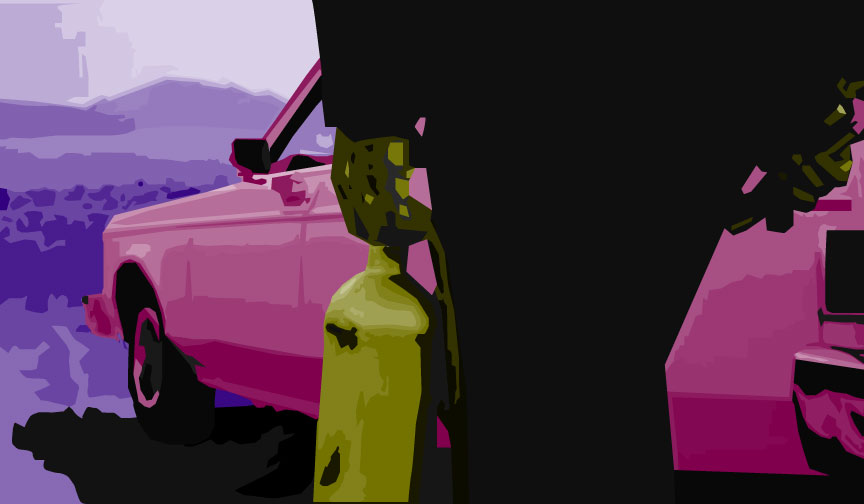
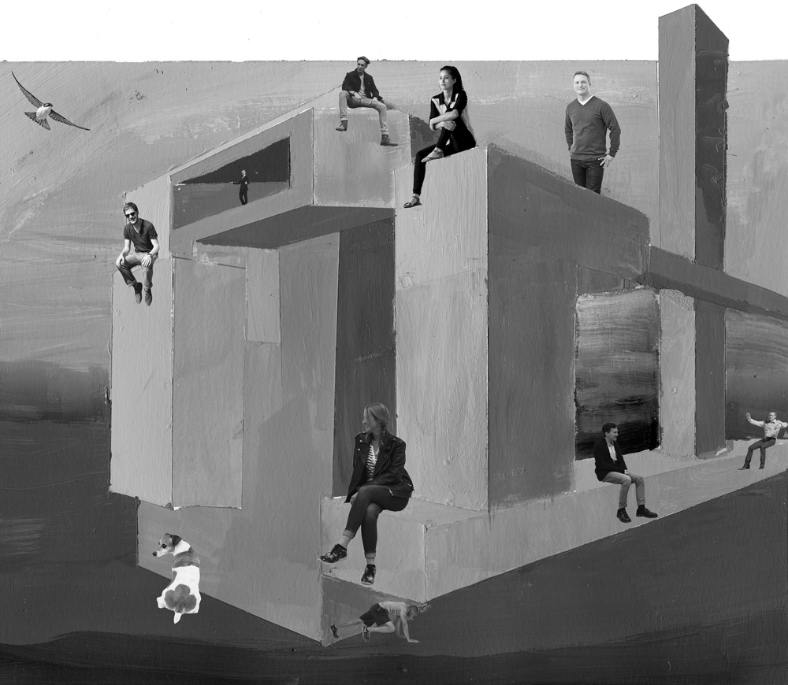
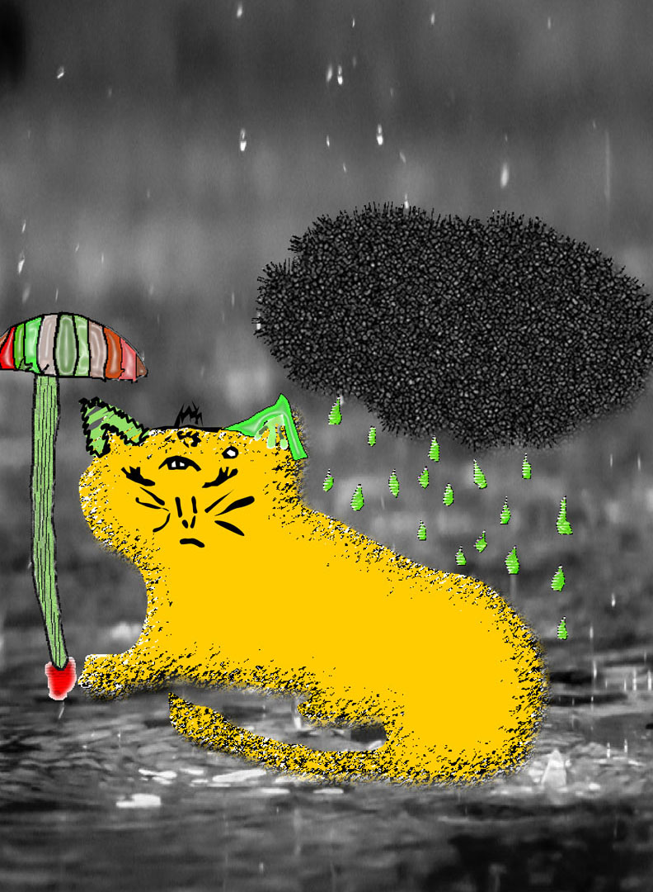

These are my major projects that I have worked on for my major at Drexel. They are all website or application designs. My website that you are viewing right now is another one of these projects. If you are interested in seeing more of my work send me an email and I can show you more.
George R.R. Martin's notablog Redesign
My redesign of George R.R. Martin's Blog, called notablog, was a term project for my winter term of 2018. The project was done using Sketch and Flinto, and required me to make a laptop, tablet, and mobile version of the website design.
Realclearpolitics Redesign
In my first term in the Interactive digital media program at Drexel I redesigned the Realclearpolitics website to make it more user friendly, easier to use, and less cluttered.
App idea and Design
In the winter of 2018 I came up with the idea for and designed an app using Invision. This app idea became the basis for a business in the arts class where my group was asked to create a business model for product, the chosen product for my group being the app that I created.
Dorm sign in App
In the spring of 2019 a group of students and were challenged to come up with a design problem and fix it as best as we could. My group chose to redesign the Dorm sign in system at Drexel, which is a slow and tedious process. We ended up designing an app that would allow users to enter the dorms without as much work, while also maintaining the safety of the dorm environment.
Linkedin Redesign
For this project I used AdobeXD to create a wireframe for the current LinkedIn App, and a redesigned LinkedIn App. I redesigned the app using ideas from Don Norman's "Design of Everyday Things", and did a writeup on all of my choices.